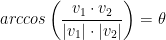

Vectors Matrices and Uniform Variables
Created Saturday 06 June 2020
As for the actual coding, we will be using a library called GLM. However, it's incredibly helpful to understand some of what is happening behind the scenes.
Vectors
- A vector is a quantity with magnitude (length) and direction.
- In other words, how far something is and in what direction.
- Can be used for lots of th ings, normally to represent a direction, or something's position (e.g. how far and in what direction something is, relative to a certain point).
Vector Addition
Vector v = (1, 2, 3) for example where x=1, y=2, and z=3.
We can add and subtract vectors.
(1, 2, 3) + (4, 5, 6) = (5, 7, 9)
(1, 2, 3) - (4, 5, 6) = (-3, -3, -3)
Vector Multiplication
We can multiply vectors by a scalar value. A scalar value in this case is a single value.
5 * (1, 2, 3) = (5, 10, 15)
Visually, this just extends the length of the vector in the same direction. Negative values have it reverse direction.
What if we want to multiply one vector by another? Well, that's hard to define visually and we don't really do it very often if at all. Instead, we make use of the Dot Product!
Dot Product
Also known as the Scalar Product because it returns a scalar vaue (single value) as opposed to a vector.
There are two ways to calculate the dot product:
The first way looks like this:
The second way looks like this:
|v1| is the magnitude or the length of v1.
is the angle between v1 and v2.
The dot product is quite amazing! It can be used to help with reflections, collision detection, checking where objects are in relation to eachother, the angle between them, etc.
Magnitude
Vectors are right-angle triangles.
As such, we can calculate magnitude with a variation of the Pythagorean Theorem!
In 3D, it's just:
This formula essentially gives us the longest side of our vector which is the vector itself!
Dot Product Angle
Now that we know how the dot product works and magnitude, we can use this information to obtain the angle between two vectors!
Once again, remember this formula:
So, we know how to calculate v1 * v2. With this, we have the following:
Remember, theta is our angle! To get it, we just use arccos.

This will be very useful when we learn about lighting!
What that diagram essentially says is if we project a along b then that is how far along we are.
b is a unit vector by the way! A unit vector is a vector with a magnitude of 0.
The dot product is also quite helpful in determining if two vectors are right-angles of one another!
Unit Vector
At times, we may only want to know a direction and how to advance in that direction.
A unit vector is a vector with magnitude (length) of just 1.
How do we get a unit vector from some vector though? Well, just divide a vector by it's magnitude! Let u be a unit vector and v be some vector. Then we have the following:
The end result is a vector u that has the same direction as the vector v but is only one unit in magnitude!
Cross Product
Only really works in 3D.
The cross product creates a new vector that is at a right angle to two other vectors.
Perhaps best to show an image of what is going on here:
Notice that order is indeed important!
Since we can get a right angle, it can be useful to determine which way something is facing or dealing with normals.
Matrices
Matrices consist of a group of values in an i * j grid.
For example: a 2x3 matrix that has 2 rows and 3 columns. Remember, we use rows and then columns!
i = rows
j = columns
Can be used for all sorts of things across grphics, game development, and scientific fields.
We will use them to handle model transforms (translation, rotation, scaling), projections, and view.
Matrix Addition and Subtraction
Scalar: Just add/subtract value from each element, much like with vectors.
Matrix: Add the values on a per-element basis. Each one matches to its own position in the other matrix.
With that in mind, the dimensions of two matrices must match for addition/subtraction!
In a way, we are just overlaying one matrix over the other. We actually don't add matrices too often but there we go!
Matrix Multiplication
Scalar: Just multiply value with each element, much like with vectors.
Matrix: Things are a bit more complex...
Firstly, order matters! Matrices are not commutative!
Secondly, the columns on the left-hand matrix must equal the number of Rows on the right-hand matrix. So, a 2x3 matrix can be multiplied by a 3x5 matrix. However, a 2x3 matrix times a 2x3 matrix wouldn't work! Why? the left matrix has 3 columns and the right matrix has 2 rows. 3 != 2 so we can't multiply them.
For the most part, we will be using 4x4 matrices in graphics programming.
It's a bit difficult to explain how to perform the multiplication so here's a photo:

Notice, we just do a dot product on overlapping rows and columns! That's all it is! For each row in the left-hand matrix, we find the dot product between it and the corresponding column in the right-hand matrix. The result in the picture gives us a 2x2 matrix! So, we won't always have a resulting matrix of the same size.
Luckily, the GLM library will handle all of this matrix math for us! So we won't have to do any of it by hand unless you plan on writing your own math library or doing something of that sort.
Matrices and Vectors
So then, you may have noticed that we can write vectors as . This is important for it's just a matrix with a single column!
This is great for we can easily multiply a 4x4 matrix by a 4x1 vector to receive a single 4x1 vector!
When multiplying, our vectors will always be to the right of our matrices.
Matrix Transforms
Matrices can be used with vectors to apply transforms to them (translation, rotation, scaling...).
Most basic is the Identity Matrix. It looks like this:
The identity matrix merely just returns the given vector!
The identitiy matrix is a good starting point for applying other transformations.
Matrix Transforms: Translation
Translation essentially just moves a vector.
Use it for changing the position of something!
Notice how that 1 in the vector allows us to add the X, Y, and Z into the vector.
Matrix Transforms: Scaling
Scaling resizes a vector.
Can be used to increase a distance by a factor, or more commonly, to make an object larger.
We don't usually scale too often in practice.
Matrix Transforms: Rotation
Rotation rotates a vector.
Should be thought of as rotating around its origin...
So to choose a point of rotation, translate the vector so the point to rotate around is at the origin.
There are three different matrices for handling rotation! One for x, another for y, and one for z.
The angles are in radians by the way!
X Rotation:
Y Rotation:
Z Rotation:
This is quite a lot to take in and, luckily, we don't have to remember all of this! GLM (OpenGL Mathematics) will do most of the matrix math for us. Even still, it does help to know what's going on here.
Matrix Transforms: Combining
Perhaps we wish to perform a translation and a scale to a vector? Well, we can by combining out matrices! Observe the following:
The resulting matrix above will scale our vector by 2 and translate it 1 along the x, 2 along the y, and 3 along the z.
To apply this matrix, we do the following:
Remember! The order we combine matrices in does matter! Transforms happen in reverse order so when we combined our translation and scaling matrices above we first apply the scaling and then the translation. In that way, our matrices are combined from right to left!
If we swapped our translation and scaling matrix, then translation would be applied follwed by scaling. So the scale would also scale the transform!
Uniform Variables
A uniform variable is a type of variable in a shader (y'know, in GLSL code.
Uniforms are values global to the shader that aren't associated with a particular vertex.
#version 330
in vec3 pos;
uniform mat4 model;
void main()
{
gl_Position = model * vec4(pos, 1.0);
}The in data changes on a per-vertex basis. However, a uniform is constant and global! It won't be changing for every single vertex that gets passed through the shader. This is useful for when we, say, want to move a bunch of vertices 10 units on the x axis.
Each uniform has a location ID in the shader.
Need to find the location so we can bind a value to it.
int location = glGetUniformLocation(shaderID, "uniformVarName");Now we can bind a value to that location.
glUniform1f(location, 3.5f);Make sure you have set the appropriate shader program to be in use!
There are different variable types:
glUniform1f - Single floating value
glUniform1i - SIngle integer value
glUniform4f - vec4 of floating values
glUniform4fv - vec4 of floating values, value specified by pointer
glUniformMatrix4fv - mat4 of floating values, value specified by pointer
etc...
Summary
- Vectors are directions and positions in space.
- Matrices are 2-dimensional arrays of data used for calculating transforms and various other functions.
- Vectors are a type of matrix and can have these functions applied to them.
- The order of a transform operations matters!
- Last matrix operation applied happens first.
- GLM is used to handle matrix calculations.
- Uniform variables pass global data to shaders.
- Need to obtain a uniform's location then bind data to it.
Extra Notes
An attribute variable is distinct for each vertex that is pass through the shader.
A uniform variable on the other hand is constant throughout the whole thing.